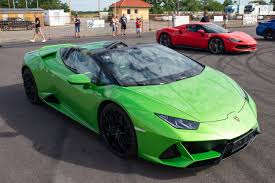
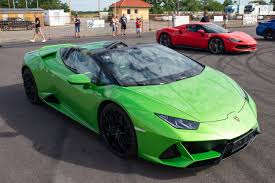

A Lamborghini Revuelto egy középmotoros, plug-in hibrid sportautó, amelyet
az olasz Lamborghini autógyártó gyárt. Hivatalosan 2023. március 29-én
mutatták be az Aventador utódjaként. A Revuelto elöl vadonatúj, Y alakú
LED-es nappali menetfényeket kapott, a fő fényszórók a menetfények felső
sarkaiban helyezkednek el. Az autó a Lamborghini ALA (Aerodinamica
Lamborghini Attiva) rendszerét is tartalmazza, amely állítólag 80%-kal
könnyebb, mint a hagyományos sportkocsik hidraulikus rendszerei, és
amelynek újratervezett szellőzőnyílásai vannak a fényszórók alatt és az
ollós ajtók mögött.
A Revueltot jelenleg is árulják, a hivatalos weboldal
itt érhető el.


A Lamborghini Huracán kétszemélyes sportautó, amelyet a Lamborghini 2014 és 2024 között gyártott. A 2013 decemberében online bemutatott Huracán világpremierje a 2014-es Genfi Autószalonon volt, és 2014 második negyedévében került forgalomba, a Gallardo utódjaként. A Huracán nevét egy spanyol harci bika ihlette. A történelmi spanyol harci bikák hagyományosan a legtöbb Lamborghini autómodell nevét adták. A Huracán megtartotta a faceliftes Gallardo 5,2 literes, szívó Audi/Lamborghini V10-es motorját, amelyet 449 kW maximális teljesítményre hangoltak. 1553 kg-os (3424 font) saját tömegével a Huracán LP 610-4 teljesítmény-tömeg aránya 2,55 kg lóerőnként.
 
